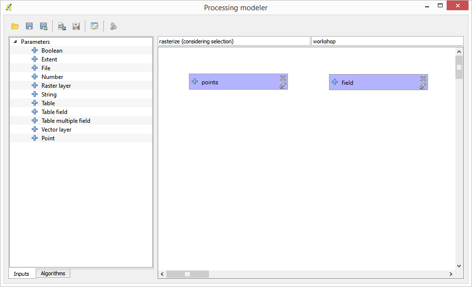
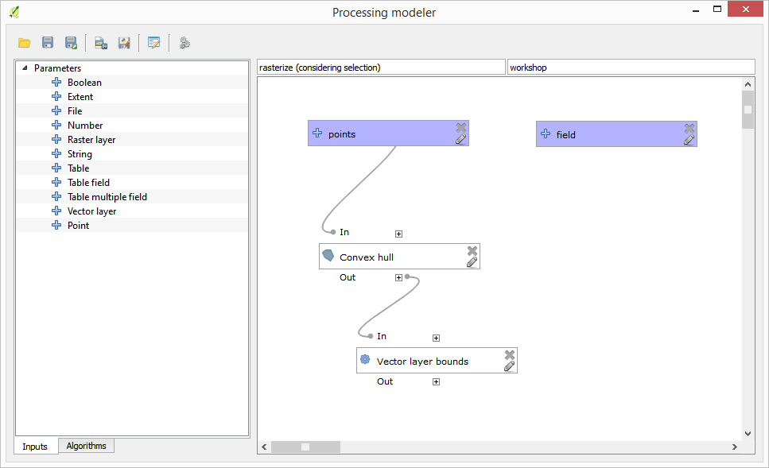
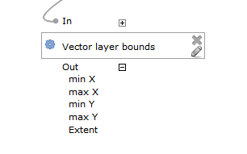
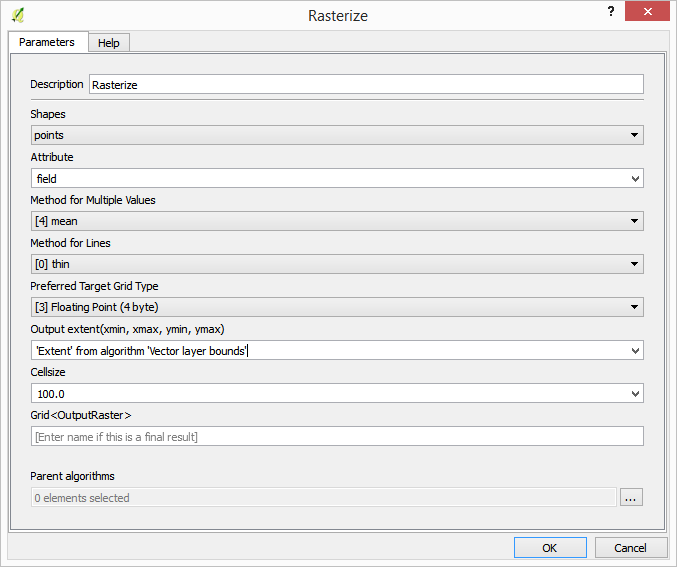
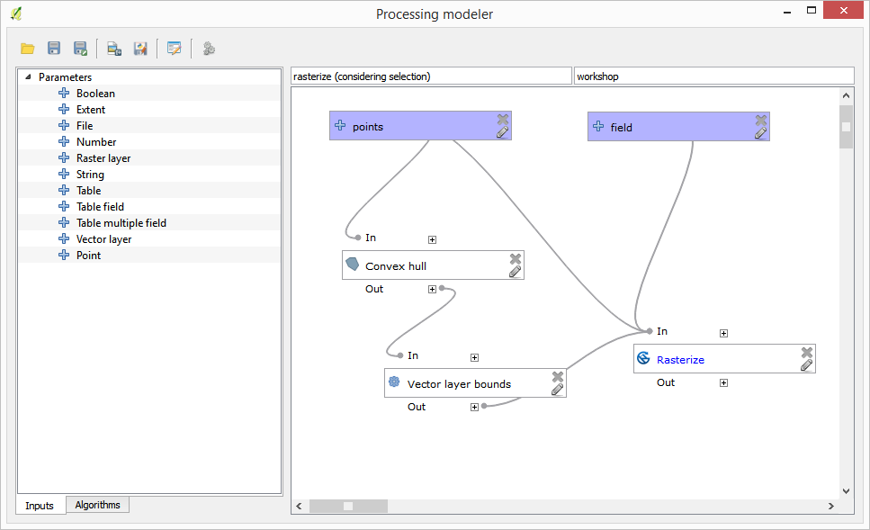
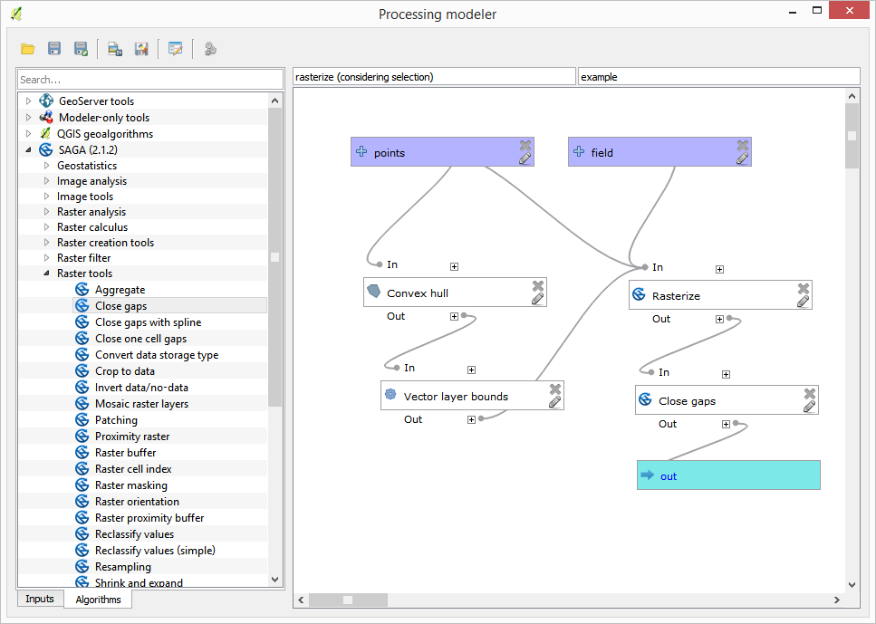
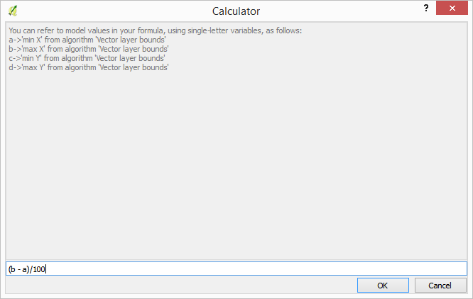
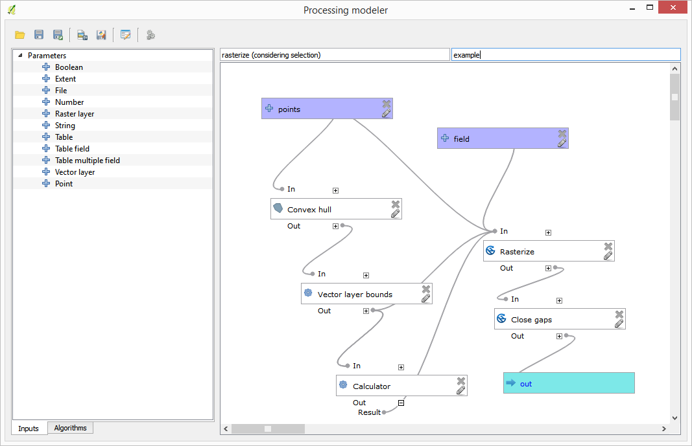

重要
翻訳は あなたが参加できる コミュニティの取り組みです。このページは現在 66.67% 翻訳されています。
17.21. モデルを作成するためにモデラー専用ツールを使用する
注釈
このレッスンでは、モデルに追加機能を提供するために、モデラーでのみ利用可能ないくつかのアルゴリズムを使用する方法を示しています。
このレッスンの目標は、モデラーを使用して現在の選択を考慮に入れる補間アルゴリズムを作成すること、選択地物だけを使用するのではなく、その選択の範囲を使用して補間されるラスタレイヤを作成することです。
補間処理には、先のレッスンで既に説明したように、2つのステップが含まれます。ポイントレイヤーをラスタ化し、ラスタ化されたレイヤに表示されるno-data（データなし）値を埋めます。ポイントレイヤに選択範囲がある場合、選択されたポイントのみが使用されますが、出力範囲が自動的に調整されるように設定されている場合は、レイヤの全範囲が使用されます。つまり、レイヤの範囲は、選択されたものから計算されたものではなく、常にすべての地物の完全な範囲とみなされます。私たちのモデルにいくつかの追加ツールを使うことによってそれを修正してみます。
モデラーを開き、必要な入力を追加することによって、モデルを開始します。この場合は、ベクタレイヤ（ポイントに制限）と、ラスタ化に使う値を持ったその属性が必要です。

The next step is to compute the extent of the selected features. That's where we can use the model-only tool called Vector layer bounds. First, we will have to create a layer that has the extent of those selected features. Then, we can use this tool on that layer.
An easy way of creating a layer with the extent of the selected features is to compute a convex hull of the input points layer. It will use only the selected point, so the convex hull will have the same bounding box as the selection. Then we can add the Vector layer bounds algorithm, and use the convex hull layer as input. It should look this in the modeler canvas:

The result from the Vector layer bounds is a set of four numeric values and a extent object. We will use both the numeric outputs and the extent for this exercise.

We can now add the algorithm that rasterizes the vector layer, using the extent from the Vector layer bounds algorithm as input.
次に示すようにアルゴリズムのパラメータを入力します：

キャンバスはこのようになる筈です。

Finally, fill the no-data values of the raster layer using the Close gaps algorithm.

これでアルゴリズムは保存して、ツールボックスに追加する準備が整いました。それを実行すると、入力レイヤで選択されたポイントを補間することでラスタレイヤが作成され、そのレイヤは選択と同じ範囲になります。
Here's an improvement to the algorithm. We have used a hardcoded value for the cellsize when rasterizing. This value is fine for our test input layer, but might not be for other cases. We could add a new parameter, so the user enters the desired value, but a much better approach would be to have that value automatically computed.
モデラー専用計算機を使用し、範囲座標からその値を計算できます。例えば、固定幅の100ピクセルのレイヤーを作成するには、計算機で次の式を使用できます。

ここでラスター化アルゴリズムを、ハードコード値の代わりに計算機の出力を使用するように編集する必要があります。
最終的なアルゴリズムはこうなるはずです：
